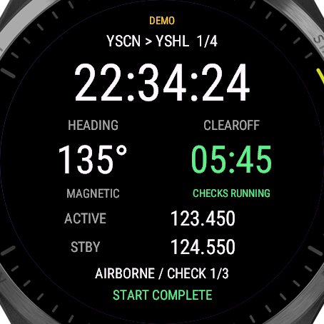
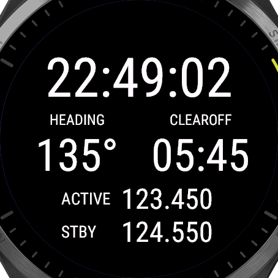
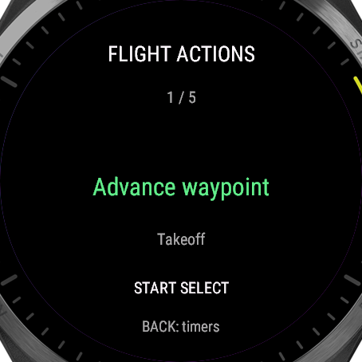
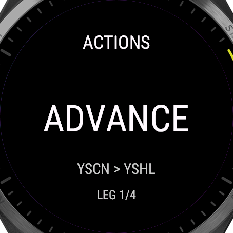

Print at 100% / actual size. Check the 50 mm calibration line with a ruler. Browser zoom, OS scaling and monitor density can change on-screen dimensions; this is a physical-size approximation, not a physical-watch readability test.




50 mm calibration
Both images contain actual FR965 simulator pixels cropped to its 454 × 454 display. Only the corners outside the circular display are masked by CSS. The 134 px previews approximate 35.4 mm at 96 CSS pixels/inch. No UI mockups or AI-generated screenshots are used.
The written V3 reference is used: clock above equal heading/CLEAROFF columns, then two aligned radio rows. The photograph and drawing were not available in this task's context. Compare arrangement and essential-value sizes; do not infer sunlight, viewing-angle or wrist-distance acceptance.
Garmin specifies a 35.4 mm display diameter. Next: install the signed build and inspect on the actual watch.